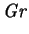
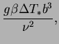
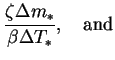
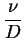
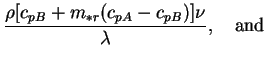
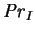
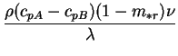
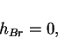
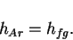
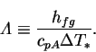

Define the reduced vapour mass flux by:
The vapour flux is the sum of advective and diffusive fluxes:
|  |  | (2.37) | |
|  | (2.38) | ||
|  | (2.39) |
Define the reduced energy flux by
|  | (2.42) | ||
|  |  | (2.43) |
The arbitrary reference enthalpy of the gas may be set to zero,
|  | (2.44) |
|  | (2.45) |
|  | (2.46) |
The energy flux
has components due to advection and conduction. The advective fluxes
are split into a bulk advective flux, the interdiffusion flux and the latent
heat flux:
The conservation of species (2.5)
and energy (2.11) then requires simply that
and  are solenoidal. These equations may be obtained
thus or by nondimensionalizing equations (2.7) and
(2.16); the result is given in §2.3.2.
The latent heat flux,
are solenoidal. These equations may be obtained
thus or by nondimensionalizing equations (2.7) and
(2.16); the result is given in §2.3.2.
The latent heat flux,
 , is solenoidal, being proportional to
,
and so makes no contribution to the energy equation.
It must be retained, however, for calculation of the total flux at the
boundaries.
, is solenoidal, being proportional to
,
and so makes no contribution to the energy equation.
It must be retained, however, for calculation of the total flux at the
boundaries.
The intrinsic link between the variability of the mixture specific heat and
the interdiffusion term in the energy equation is made
even more obvious by the above reduction:
both depend on the same
dimensionless parameter, the interdiffusion Prandtl number,
 .
.
![$\displaystyle \frac{1-\exp({-\varPhi _T})}{\varPhi _T} \mbox{\textit{Gr}}(1+N)
...
..._r+\mbox{\textit{Pr}}_I\left(1-\mathrm{e}^{-\varPhi }\right)m\right]T\mathbf{u}$](img259.png)